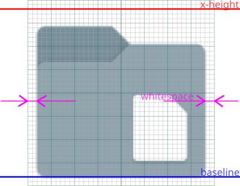

Waterleaf icons composition guidelines, developer manual, rev. 04/2025
Developer Manual
1. IntroductionWaterleaf icon set is based primarily on Paper icons by Sam Hewitt. It also mixes application icons from the Deepin and Papirus icon themes with original work, mostly TDE specific icons.
This guideline is being created to help developers and designers create a consistent experience on the Waterleaf icon theme. It was written for interface designers, graphic artists, and software developers who will be working on Waterleaf icons. It will not only define specific design elements and principles, but will also instill a philosophy that will help you decide when it is appropriate to deviate from the Guideline.
The vector "svg" image format is highly preferred to the obsolete pixmap "png" format for new icons, however many of current Waterleaf icons still uses the "png" format. The objective is to replace pixmap with the vector format for all icons eventually.
Waterleaf icons use six main icon sizes, and it's best to include all six as part of an application:
16 - 24 - 32 - 48 - 64 - 128
Design each icon for the size it's meant to be viewed at. In other words, do not design one icon and resize it to fill the remaining sizes. The best result is when each icon is designed individually. Please follow the rules mentioned further.
Note: Size 22 icons are additionally required by some TDE applications.
There are a few aspects to note when designing a Waterleaf icon:

1. Canvas - the image workspace, corresponding to the absolute size of an icon.
2. Baseline (blue) - to ensure that all icons of one size line up along the bottom when in a row, much like text.
3. X-height (red) - maximum height, or "how tall" the icon could be.
4. Whitespace (cyan) - free space from image to canvas border.
Keeping these aspects in mind while designing, see the next chapter, means you can place elements along them to ensure that icons appear more consistent when put together.
A basic rules to follow while designing:
Smaller size icons, especially 16 and 24, should be more "schematic" and simplified with thicker lines and less colors, to be distinguishable as best as possible.
The whitespace varies for different icon sizes and should increase proportionally along with the icon size. It should equal the baseline distance from the canvas edge.
A basic guide, listed as:
canvas size | baseline | x-height | whitespace | percent of space used, rounded up
| canvas | baseline | x-height | whitespace | space used |
|---|---|---|---|---|
| 16 | 0 | 16 | 0 | 100% |
| 22 | 1 | 20 | 1 | 91% |
| 24 | 1 | 22 | 1 | 92% |
| 32 | 2 | 28 | 2 | 88% |
| 48 | 3 | 40 | 4 | 83% |
| 64 | 4 | 52 | 6 | 81% |
| 128 | 9 | 104 | 12 | 81% |
Drawings are centered on the vertical axis for all size variants.
Horizontal positioning of drawing may follow two rules. The default is to align the bottommost part of the drawing with the baseline. An option is to center the drawing on the horizontal axis, so it can be set higher than the baseline.
Shadows, effects, color blending, and transitions are be applied for size 48 and above only and should be consistent across the iconset. Shadows for 48 variant are subtle and become bolder as size increases.
Shadows are an extra part of the drawing. Aspect ratio and positioning of actual drawing is being calculated before shadows addition, so shadows may overflow both baseline and whitespace.
There are, however, exceptions to these guidelines. Rounder or lighter components will generally require some overshoot to compensate for the optical illusion that makes them look smaller than their rectangular counterparts. Some groups of a specific application icons could deviate from the guidelines somewhat, depending on the specific application design. Moreover, some system icons, especially mimetype icons, have ascending and descending elements, which are those elements that extend beyond the baseline and x-height line.
Waterleaf icons composition guidelines, developer manual, rev. 04/2025